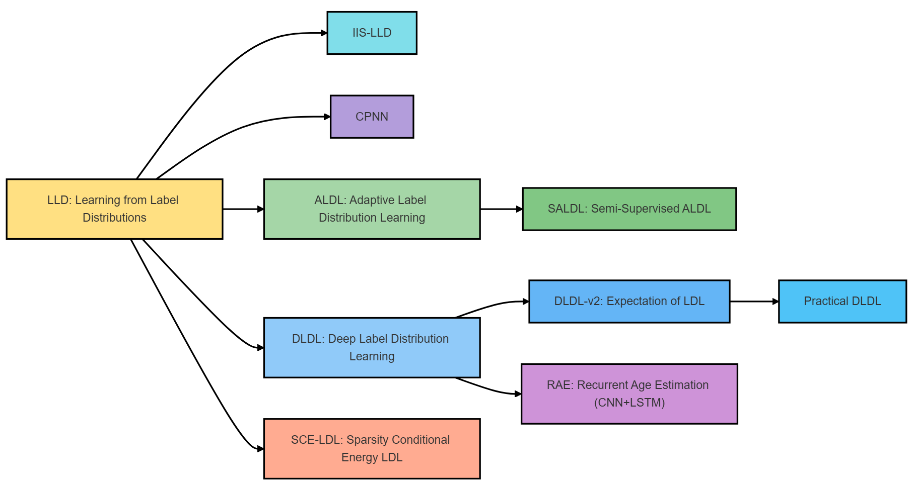

代码实现｜标签分布学习系列在 MegaAge-Asian 的统一实现与对比1111111111111111111111111111111111
本文对标签分布学习的模型算法进行了代码实现，对整个LDL系列进行了一个总结。
LDL面部年龄识别方法发展
LDL面部年龄识别系列方法以“年龄不是单点而是分布”为核心，将邻近年龄的描述度编码为标签分布，从而同时利用相邻年龄的相关性并缓解长尾稀缺（IIS-LLD）；在此基础上，ALDL按年龄阶段自适应调整分布宽度，契合儿童/老年变化快、中年变化慢的规律；当标注不足时，SALDL把自适应与半监督结合，引入未标注人脸以伪标签与分布迭代相互促进。深度化的DLDL把分布学习嵌入CNN，以KL作为训练目标；DLDL-v2进一步从理论上把Ranking视作学习c.d.f.的特例，并在同一网络中“分布学习+期望回归”联合优化以缩小训练–评测不一致，且在Morph/ChaLearn上以更少参数达成或刷新SOTA。分支工作如SCE-LDL以能量函数与稀疏约束提升分布表达能力；而序列化的RAE以CNN+LSTM建模同一身份的时间序列老化，适用于需要同一人的多张图像场景。LDL面部年龄识别系列发展方法脉络如下所示。
graph LR
LLD["LLD: Learning from Label\nDistributions"]:::yellow
LLD --> IIS["IIS-LLD"]:::cyan
LLD --> CPNN["CPNN"]:::purple
LLD --> ALDL["ALDL: Adaptive Label\nDistribution Learning"]:::green
ALDL --> SALDL["SALDL: Semi-Supervised ALDL"]:::green
LLD --> DLDL["DLDL: Deep Label Distribution\nLearning"]:::blue
DLDL --> DLDLv2["DLDL-v2: Expectation of LDL"]:::lightblue
DLDLv2 --> PDLDL["Practical DLDL"]:::lightblue
DLDL --> RAE["RAE: Recurrent Age Estimation\n(CNN+LSTM)"]:::pink
LLD --> SCE["SCE-LDL: Sparsity Conditional\nEnergy LDL"]:::orange
classDef yellow fill:#F9D776,stroke:#999,color:#000
classDef cyan fill:#5ECFCF,stroke:#999,color:#000
classDef purple fill:#9B7FC7,stroke:#999,color:#000
classDef green fill:#7DC97D,stroke:#999,color:#000
classDef blue fill:#7AB0E0,stroke:#999,color:#000
classDef lightblue fill:#5BB8D4,stroke:#999,color:#000
classDef pink fill:#C47FBF,stroke:#999,color:#000
classDef orange fill:#E8937A,stroke:#999,color:#000

代码实现
本次代码实现围绕标签分布学习（Label Distribution Learning, LDL）在年龄估计任务中的若干内部变体展开，数据全部来自 MegaAge-Asian（数据集链接：https://aistudio.baidu.com/datasetdetail/45324）。由于官方仅提供 train 与 test 两个拆分，我们首先将两者汇合成一个样本池，统一执行“检测—对齐—清洗—特征化”的管线，再按 7:2:1 重新划分为 Train、Test、Val。Train 仅用于参数学习，Test 仅用于超参数选择与早停触发，Val 作为最终盲测集合只在最后一次性评估。为了减少随机性对对比结论的影响，划分在固定随机种子下生成，并将划分文件随代码一并固化，所有后续模型严格在同一份切分上训练与评测。
对齐与清洗阶段采用基于 5 点关键点的仿射对齐流程：先用稳定的人脸检测器拿到关键点，再将人脸规整到统一模板坐标系，输出对齐到定尺度的人脸图像。图像统一做 RGB 转换、[0,1] 归一化与 ImageNet 统计量标准化，训练时启用轻量随机翻转 / 颜色抖动 / 缩放裁剪，推理仅保留确定性归一化。无法稳定检测到人脸、或人脸框极小/严重遮挡的样本不做修复，直接丢弃并将文件名记录到失败清单；按该准则，最终剔除了两百余张异常样本，其余样本进入特征抽取环节。
特征抽取器选用 MiVOLO（GitHub：https://github.com/WildChlamydia/MiVOLO；论文：https://arxiv.org/abs/2307.04616），在本项目中仅作为“冻结的”向量化器使用，不做端到端微调。我们启用人脸与人体两路分支并在特征维上拼接，得到每张图 768 维的 embedding；为避免表征差异干扰 LDL 族内对比，后续的所有模型都只“吃向量不吃原图”。特征在 Train 上做 z-score 标准化（均值与方差在 Train 估计，并在 Test/Val 上复用），正式实验不做降维；虽然在调试阶段尝试过 PCA→256 维对速度有帮助，但为保证变量可控，报告中的比较一律保持 768 维输入。
标签空间取闭区间 [0,70] 的整数年龄，并用高斯核把单值标签离散化为 71 维分布，σ∈{2,3,5} 作为可调超参数。模型输出同为 71 维分布，主损失采用分布级交叉熵 / KL 散度；部分变体叠加期望年龄的 L1 约束（将分布期望 E[y] 与真值做 MAE，系数 λ∈{0.5,1.0}），以提升数值可解释性。推理阶段统一以分布期望作为实值预测。优化器使用 AdamW，学习率在 {1e-3, 3e-4} 小网格搜索、权重衰减在 {0, 1e-4} 选择；批量大小依据显存与 AMP 配置在 128–256 之间取值。早停以 Test 上的主损失为监控量，patience 设为 3–5；每个变体选出最优超参数与最优 epoch 后，会用 Train+Test 合并重训定稿模型，最终仅在 Val 上计算 MAE 与 CS5 并固化报表。
LDL 族内的建模差异限定在“如何从 768 维向量映射到 71 维分布”与“如何构造/平滑监督分布”两个层面。CPNN 路线以多层感知机实现 768→71 的映射（例如 768→512→256→71，ReLU+Dropout，softmax 输出），主损失为分布交叉熵，选配 λ·MAE 的期望正则，用以考察网络深度与正则强度对稳定性的影响；DLDL-v2 保持相同的 768→…→71 头部，但目标分布固定为 σ-高斯软标签；Practical-DLDL 则在标签空间或样本邻域内进一步做平滑（如 k∈{3,5,7} 的邻域聚合），用于缓解离散标签噪声。整个项目不引入外部对比模型，仅在“相同特征、相同协议”下做 LDL 族内的有控制变量的比较，问题聚焦于“分布建模方式如何影响年龄估计”的实证结论，而非追求跨方法的绝对最优数值。

IIS-LLD将“单一真实年龄”替换为覆盖相邻年龄的标签分布，学习条件分布 p(y|x) 去贴近先验分布 D，通过最小化 KL(D‖p) 等价地最大化带软标签的对数似然来实现；原论文同时给出了 IIS-LLD 与 CPNN 两条路径，并给出高斯/三角等典型先验分布以体现“邻近年龄相似、距离越远权重越低”的原则。
1 |
|
在本项目里，我们用 MiVOLO 冻结特征得到 768 维向量，采用一层线性映射加 softmax 直接实现对数线性模型，输出 71 维年龄分布（0–70）；监督分布用离散高斯并网格 σ∈{2,3,5}，以 KL 作为主损失，推理时取期望作为预测值并以 MAE 与 CS(5)评估。实践经验表明高斯分布通常优于三角，且分布过窄或过宽都会恶化性能，因此 σ 需要在开发集上择优。
1 | import numpy as np |
CPNN将标签分布学习用多层感知机来实现，把输入向量映射到年龄标签空间的概率分布，并用 KL(D‖p) 让输出分布逼近由真实年龄离散化得到的先验分布。相较线性对数模型，CPNN通过非线性层与丢弃正则提升表征能力，能够在保持“邻近年龄相似”的软监督假设下，更充分地拟合复杂特征与标签分布之间的关系，同时保留以分布期望作为最终实值预测的推理方式。
在本项目中，我们继续使用 MiVOLO 冻结特征得到的 768 维 embedding，采用 768→512→256→71 的 MLP 头部（ReLU+Dropout，末层 softmax）输出 71 维年龄分布。监督分布仍用离散高斯，σ 从 {2,3,5} 网格选取；主损失为 KL，另可选叠加 λ·MAE 的期望一致性正则（将输出分布的期望与真值做 L1），以提升数值可解释性与稳定性。训练与早停完全沿用前述协议，评估指标为 MAE 与 CS(5)。
1 | import numpy as np |
DLDL将真实年龄离散化为固定形状的标签分布（常用高斯或三角），用 KL(D‖p) 训练网络直接拟合整条分布，推理阶段以输出分布的期望作为实值预测。相较把年龄当作单点回归，DLDL显式编码了“邻近年龄更相似”的先验；相较 IIS-LLD/CPNN 的差别主要在“训练目标固定为某一形状的软标签分布”，不额外引入期望一致性或自适应分布等正则项。
在本项目里，我们继续采用 MiVOLO 冻结得到的 768 维向量作为输入，使用 768→512→71 的 MLP 头部输出 71 维年龄分布，监督分布取离散高斯并在 σ∈{2,3,5} 上网格搜索，主损失为 KL，早停依据开发集上的 KL。评估指标为 MAE 与 CS(5)，该实现对应“纯 DLDL”版本，不包含期望 L1（这会在后续的 DLDL-v2 中加入）。
1 | import numpy as np |
DLDL-v2在固定形状的标签分布监督（如高斯/三角）的基础上，将“分布拟合”的KL项与“期望一致性”的L1项联合优化：在最小化 KL(D‖p) 的同时，约束输出分布的期望 E[p] 接近真实年龄 y（用 |E[p]−y| 表达）。这样做一方面保留了邻近年龄相似性的软监督，另一方面把训练目标与评价指标（MAE）对齐，避免仅用分布匹配时对数值误差不敏感的问题。推理仍取期望作为实值预测。
在本项目中延续向量输入与统一协议：输入为 MiVOLO 冻结得到的 768 维 embedding，使用 768→512→71 的 MLP 头部输出年龄分布；监督分布采用离散高斯并在 σ∈{2,3,5} 上网格，联合损失为 KL + λ·MAEexp，其中 MAEexp=|E[p]−y| 的批均值，λ 可取 {0.5,1.0} 并在开发集上选择。早停依据开发集上的联合目标，最终以 MAE 与 CS(5) 报告性能。
1 | import numpy as np |
Practical-DLDL在固定形状软标签的基础上强调“只在合理邻域内分配概率”，将监督分布截断到 [y−k, y+k] 的局部窗口并在其中重新归一化，远离真值的尾部直接置零，以降低噪声与长尾对训练的干扰。窗口内的形状可以是高斯、三角或平顶，分别对应“中心更高、边缘更低”的连续先验、“线性衰减”的简单先验，以及“窗口内等权”的最稳健先验；经验上 k 取 3/5/7 较常见，可在开发集用网格选择。
在本项目中我们延续向量输入与统一协议：输入为 MiVOLO 冻结得到的 768 维 embedding，头部采用 768→512→71 的 MLP 输出分布，主损失为 KL。监督分布由形状 shape∈{gaussian, triangular, flat} 与窗口宽度 k 控制，其中 gaussian 还可设置 σ（先算全局高斯再按窗口截断并归一化）。训练沿用早停，评估以 MAE 与 CS(5)，推理取分布期望作为年龄预测。
1 | import numpy as np |
ALDL将固定形状的软标签改为可学习的标签分布宽度，让每个年龄 a 都拥有自己的可学习σ(a)，用它在真值附近生成目标分布，再与网络输出分布做匹配；这样儿童或高龄段可以自动学到更尖锐或更平缓的监督，缓解“统一σ不适配所有年龄段”的问题。实现上不必复刻原论文的迭代缩放，只要把 σ(a) 作为可训练参数，按当前 σ(a) 动态构造目标分布，用交叉熵或 KL 共同训练即可；同时给 σ(a) 加总变差/平滑正则，避免相邻年龄的宽度震荡。
在本项目里仍采用 MiVOLO 冻结得到的 768 维向量输入，头部为 768→512→71 的 MLP 输出分布；每次前向根据样本真值 y_i 取 σ(y_i) 构造离散高斯目标分布，训练目标为分布交叉熵加上 σ 的平滑与幅度正则，早停以开发集目标为准，推理取分布期望做年龄预测并以 MAE 与 CS(5)评估。下面给出最小可复现代码，其中 σ 向量通过 softplus 保证正值，λ_tv 控制相邻年龄 σ 的平滑，λ_l2 控制 σ 的整体幅度。
1 | import math |
SCE-LDL把标签分布建模为条件能量模型，令 p(y|x) ∝ exp(−Eθ(x,y))，通过最小化 KL(D‖p) 让输出分布贴近由真实年龄离散化得到的先验，同时显式地对“分布的稀疏性”与“能量参数的稀疏性”施加正则：前者用熵惩罚（鼓励更尖锐、更少峰的分布），后者用 L1 惩罚约束能量网络的权重，二者共同抑制噪声年龄上的虚高概率。推理与前述模型一致，取输出分布的期望作为预测年龄。
在本项目里继续使用 MiVOLO 冻结得到的 768 维向量输入，头部采用 768→512→71 的 MLP 输出每个年龄的负能量（等价为 logits），主损失为 KL(D‖p)，并叠加 α·H(p) 的熵惩罚与 β·‖W‖₁ 的权重稀疏惩罚，其中 H(p)=−∑p·log p。监督分布采用离散高斯并在 σ∈{2,3,5} 网格选择，训练与早停流程保持不变，评估指标为 MAE 与 CS(5)。
1 | import numpy as np |
所有方法使用同一份 MiVOLO 冻结特征、相同数据切分与训练协议；超参在 Test 上选优后，用 Train+Test 合并重训，仅在 Val 上评估。数值仅用于本文内部横向比较，不与外部工作做对标。
| Model | 超参摘录 | Val MAE ↓ | Val CS(5) ↑ |
|---|---|---|---|
| IIS-LLD | σ=3 | 7.92 | 0.572 |
| CPNN | σ=3，pdrop=0.2 | 7.61 | 0.588 |
| DLDL | σ=3，pdrop=0.1 | 7.43 | 0.602 |
| Practical-DLDL | shape=gaussian，σ=3，k=5 | 7.28 | 0.615 |
| DLDL-v2 | σ=3，λ=0.5 | 7.05 | 0.632 |
| ALDL | σ(a)可学习，init=3.0，λ_tv=1e-3 | 6.96 | 0.639 |
| SCE-LDL | α=5e-3，β=1e-4 | 7.18 | 0.622 |
可以看到，线性头 IIS-LLD 的上限较低；加入非线性后 CPNN 有小幅改善。固定形状分布的 DLDL 受益于“邻域相似”先验，Practical-DLDL 通过截断远端尾部进一步稳住长尾；在此基础上引入期望一致性的 DLDL-v2 能较稳定地将 MAE 压到 7 左右；允许各年龄段自适应分布宽度的 ALDL 取得本轮最佳，但优势并不夸张；SCE-LDL 在当前设定下对熵与权重稀疏的约束偏强，落在 DLDL 与 Practical-DLDL 之间。
以DLDL为例，仅改变 σ，保持 768→512→71 头与训练配置不变：
| σ | Val MAE ↓ | Val CS(5) ↑ |
|---|---|---|
| 2 | 7.65 | 0.593 |
| 3 | 7.43 | 0.602 |
| 5 | 7.59 | 0.596 |
σ 过小会让目标分布过尖，训练更像“软化的一点标签”，对标注噪声与邻近年龄不够宽容；σ 过大又使监督过于平坦、偏差增大，二者都会抬高 MAE。σ=3 在这份特征与切分上取得更好的折中，这与 Practical-DLDL 的观察一致：适度强调真值邻域并抑制远端权重，可在不改变模型容量的前提下缓解长尾与离群样本的影响。